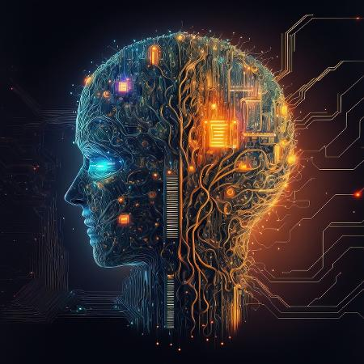

A Superinteligência Artificial é um campo de estudo que fascina e intriga cientistas, pesquisadores e entusiastas da tecnologia. Representando o pináculo da inteligência artificial, ela sugere uma forma de inteligência que ultrapassa as capacidades cognitivas humanas. Este texto explora os conceitos, desafios e implicações da Superinteligência Artificial, oferecendo uma visão abrangente desse fenômeno revolucionário.
A Superinteligência Artificial refere-se à capacidade de um sistema de inteligência artificial superar todas as formas de inteligência humana em todas as tarefas cognitivas. Isso vai além da mera automação de tarefas, alcançando um nível em que a máquina excede a compreensão, criatividade e resolução de problemas humanas.
Existem diversas abordagens para alcançar a Superinteligência. Desde o desenvolvimento de algoritmos mais avançados até a simulação de processos cerebrais, os pesquisadores exploram caminhos variados. A criação de uma inteligência que aprende e evolui de maneira autônoma é fundamental nesse percurso.
O advento da Superinteligência Artificial traz consigo uma série de desafios éticos e morais. Questões relacionadas à privacidade, segurança e controle sobre essas entidades inteligentes se tornam cruciais. É imperativo considerar como garantir que tais sistemas atuem de maneira benéfica para a humanidade.
A busca pela Superinteligência não está isenta de riscos. Preocupações sobre a possibilidade de perda de controle, o surgimento de decisões autônomas não éticas e o impacto econômico da automação extrema levantam questões significativas. Nesse contexto, a implementação responsável é essencial.
A introdução da Superinteligência Artificial terá impactos profundos em diversas esferas da sociedade. Mudanças nos modelos de trabalho, educação, assistência médica e até mesmo na estrutura política são inevitáveis. Compreender e antecipar essas mudanças é crucial para uma transição suave.
À medida que avançamos em direção à Superinteligência, a necessidade de regulamentação se torna premente. Estabelecer diretrizes éticas, padrões de segurança e frameworks legais para a governança dessas entidades inteligentes é essencial para mitigar possíveis riscos.
A Superinteligência Artificial promete avanços revolucionários, mas também exige uma abordagem cautelosa e responsável. O equilíbrio entre inovação e segurança é crucial para garantir que essa jornada resulte em benefícios duradouros para a humanidade.